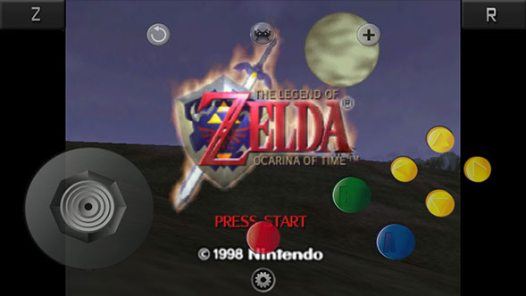

RetroArch is a multi-emulator capable of playing many different consoles (most times at near full speed or full speed), including but not limited to:
- N64
- NES
- SNES
- PSX (PS1)
- GBA
- M.A.M.E.
You are also able to change the controller overlay, so you can use, for example, a PS1 controller to play N64! Games can be either put into the documents folder, or added by using the Open In function in Safari or other apps after downloading a ROM.